Hi all. My name is Luc Castelain. I am a young French guy passionate by a lot of things. I have a big smile and I love to travel, discover and experiment.
This is my website. I made it and I hope it will help you to know me more 😉.
Luc Castelain
Hello I'm
Luc Castelain
I'm an French engineering student.
I am a 23 years old student in Engineering school in France.
About meAbout me
That's me ⤵
Education
I did 5th year in an engineering cursus at ENIB (Engineers National School of Brest) in France.
I have a general engineering degree. My specialization is computer sciences and programming fields.
Engineering school
Except from my school courses, I got offered some opportunities throughout my scholarship.
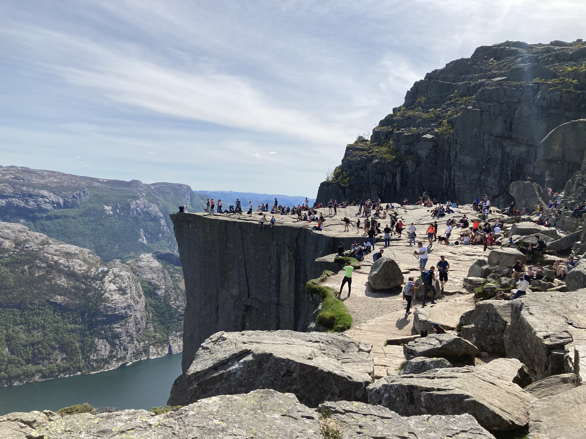
Erasmus semester
During my degree, I followed an Erasmus semester in Stavanger, Norway.
I studied machine learning, data mining and web programming
loved this country, I met a lot of people from all around the world, visited a country with many unbelievable landscapes. It was an unforgivable experience.
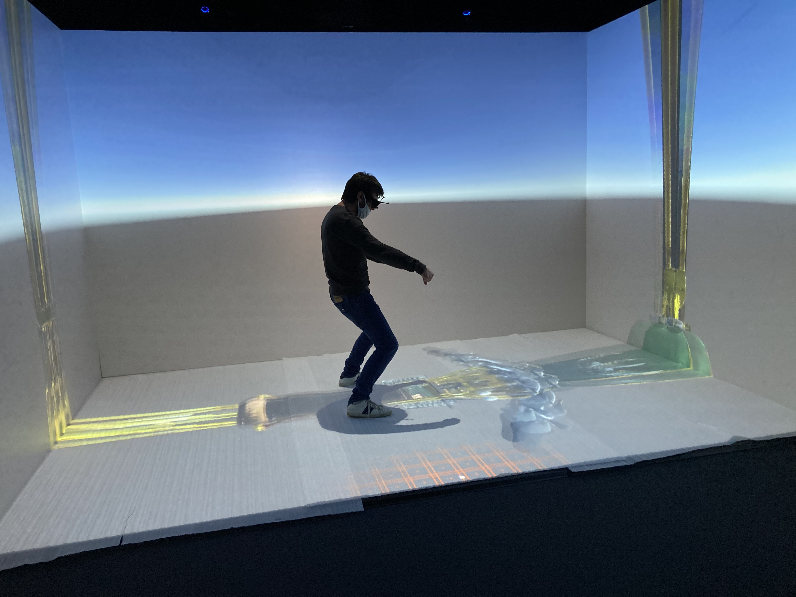
Multiple internships
I did multiple internships requiring different qualifications. From worker to engineer internship.
You can see them in the WORK section.
High-school
High-school diploma
I got my high school diploma in June 2016 with honours at the junior high school Jacques Monod, in Saint Jean-de-Braye, France.
Work
Throughout my scholarship, I interned for different companies. These were all great and different experiences.
Associate software engineer
I am currently working as an associate software engineer full-stack in Genesys Brest. Genesys is a company that offers cloud solutions to various partners, for agent and customer managements.
I am mainly using Node JS, Javascript and AngularJS, as well as HTML and CSS.
6 months engineering internship
I worked for 6 months with the QA team at Genesys Brest.
I created a web application from scratch using Node JS, javascript, HTML (handlebars), and python. I worked closely with the QA to build the application. It allowed QA team to access their own scripts and fill RCA (Root Cause Analysis) in cse of "Failed" status.
All of this give the opportunity to have products history. This app displayed many information in different tabs. It was a starting point to get every automated tests from QA at the same place.
This application should help to improve productivity and helps Genesys engineers for the analysis of automated tests.
4 months programming internship
I worked remotely from France with the Affective Social Computing Laboratory at Florida International University.
I worked on an interactive simulation system created to help early career teachers learn effective classroom management skills.
I had to debug and optimize a new software used to create and edit scenarios for this system. This software had to be completely functional by the end of my internship.
I also worked on Unity to make scenes working on VR Devices.
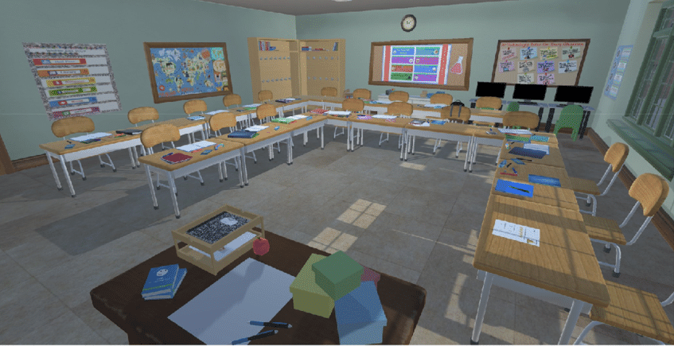
3 months technician internship
I worked in DOSISoft, in Paris, which provides and works on innovative solutions advancing Radiation Oncology through treatment planning, segmentation, virtual simulation and patient specific QA.
I had to improve and upgrade a tool that can edit and lay out medical reports in the medical software ‘Planet Onco Dose’. Planet Onco Dose is a medical imaging software for cancer diseases.
The new tool needed to take all the rightful data and put them vastly and automatically in a report so that the users can print it directly or modify it before printing.
1 month internship
worked at NES – National Electronic Service, in Saint-Cyr-en-Val, France. NES is a company specialised in extended warranty and after sales warranty for all kind of domestic appliances.
The aim of this internship was to discover a company and its working environment. I worked with the technical department and trained to repair electronic devices.
I wrote a report to the Director of Operations explaining the work done and what could be changed to improve this department.
This internship allowed me to get acquainted with the Lean Management process.
Portfolio
Throughout my scholarship, I needed to do few internships. These were all great and different experiences.
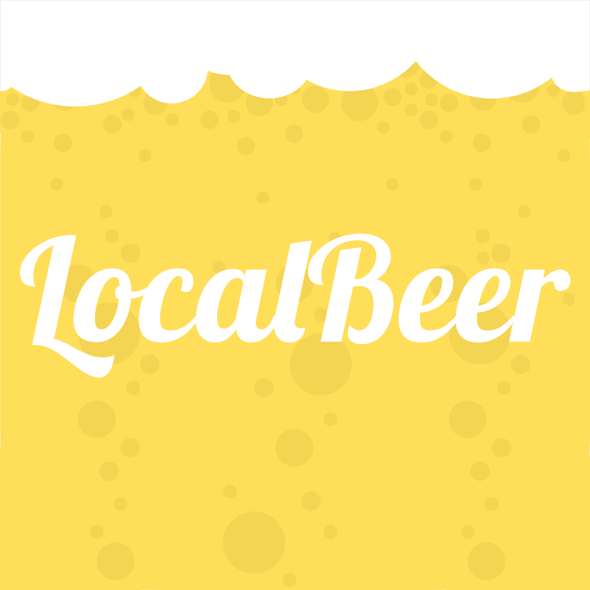
Local Beer
Click me !
LocalBeer is an app that lists some of the breweries of Brittany, in France. It was a project made during oriented programming classes at ENIB. The perspective of LocalBeer is to push the users to consume and discover local beers and breweries, so this app completes one of the 17 sustainable development goals.
This app was made with Android Studio 3.5, Java and XML. The database is in JSON and it can be used into other programs. The app was also made with swift by an other member of my group and it works on iPhone and apple Watch.
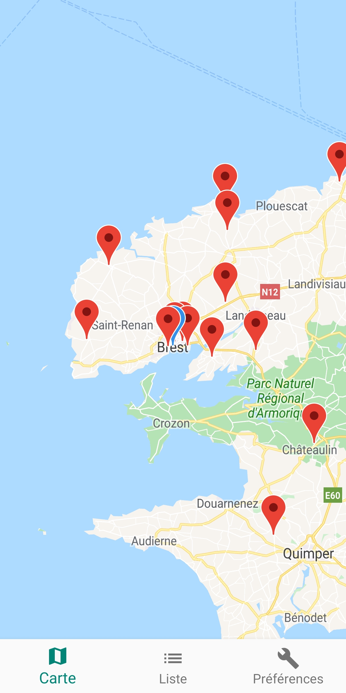
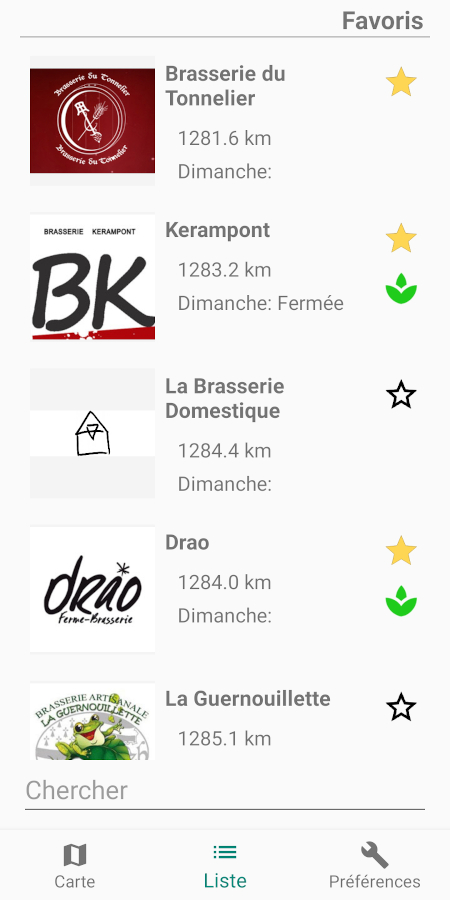
Missed - Android game
Click me !
Missed is an Android game. The player has to avoid red bullets fired by white cubes rotating around the arena. The player’s score is equivalent to the time he survived. As the time goes by, more cubes will appear and the difficulty will increase.
This game was made with unity3D 2019 and C#.
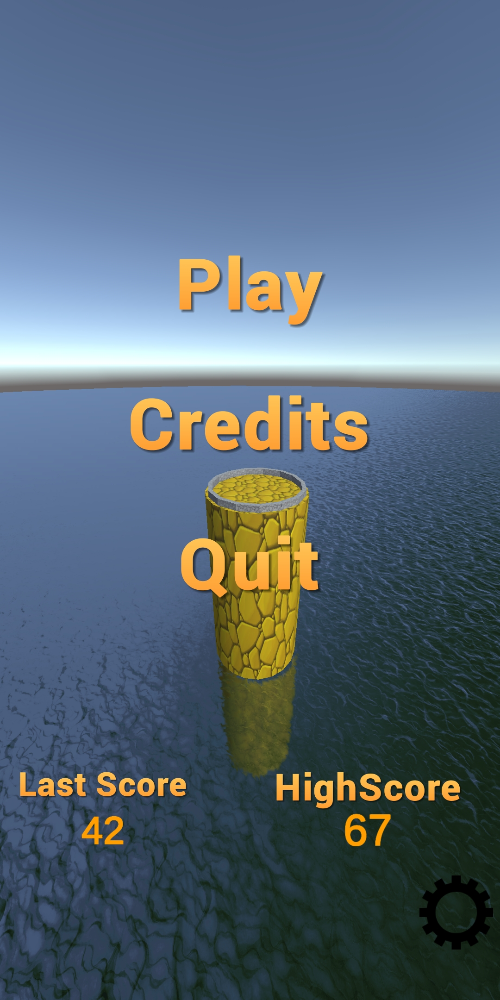
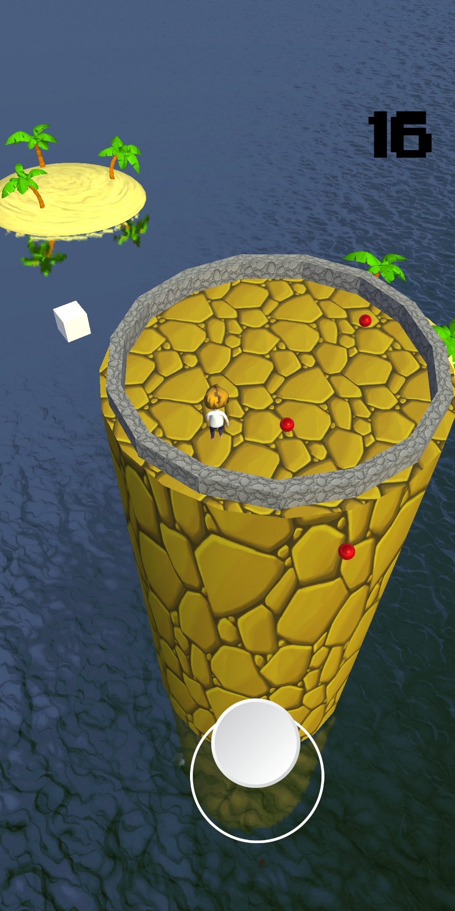
DotWar - Android game made in 24 hours
Click me !
DotWar is a game which work on android devices. The idea was to challenge myself to make a game in one day.
In this game, the player has to click on a red dot in a certain amount of time. The dot plays a piano note and moves when pressed.
The difficulty increases with the score.
This game was made with unity3D 2019 and C#.

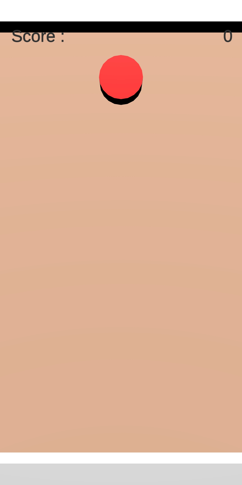
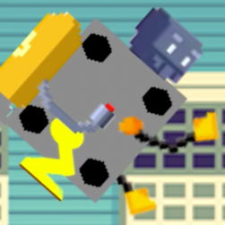
Global Game Jam 2k20
Click me !
In January 2020, I participated with few friends in the Global Gam Jam. We had 48 hours to make a game on a theme : repair.
We made a 2D platformer game in a 3D environment. The player plays a broken robot that needs to found his parts in four different levels.
Each level can be played in any order. Each part unlock a new ability that can help in another level, so the player can chose how he wants to progress.
It was our first game jam and the game may need some polishing, but it was a great experience. We all learned a lot and had a lot of fun.
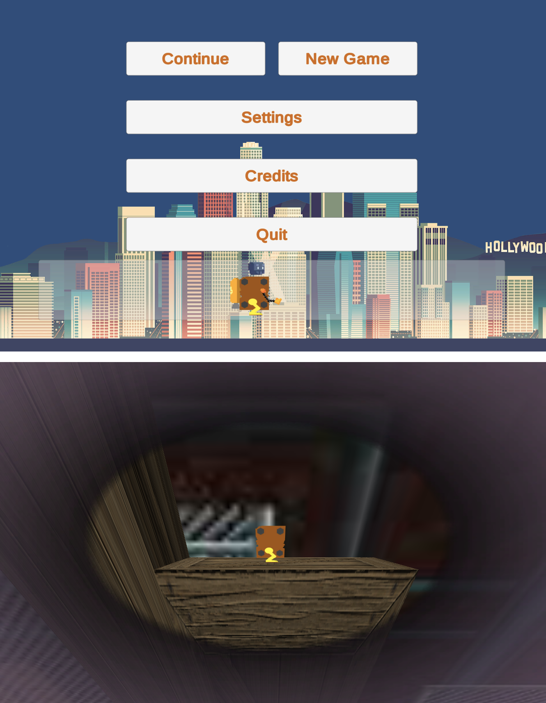
Game engine with SDL2 & C++
Click me !
I decided to try to make a game without using any game engine. I learned how to use SDL2 with C++.
I made a basic prototype running. In this prototype, a basic map was generated. The player sprite could be moved around with the keyboard and shot projectiles.
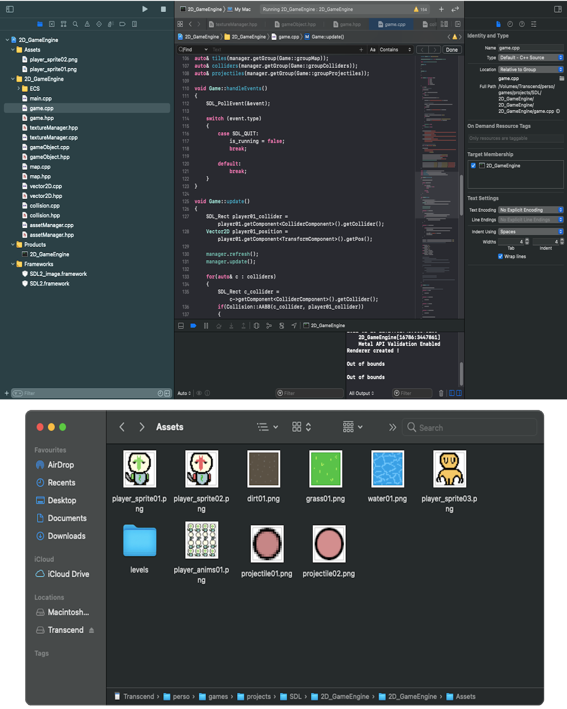
Swift game prototype
Click me !
I made a 2D game prototype for IOS to learn Swift. I used Xcode and SpriteKit to do so.
In the game a ball is bouncing regularly and infinitely on a sphere with spikes. Using its fingers, the player can rotate the sphere and guide the ball to a green place on the sphere. Once the ball is on the green place, a new sphere is generated and the score increases by one point.
If the ball touches a spike, the game is lost and the score is reset.

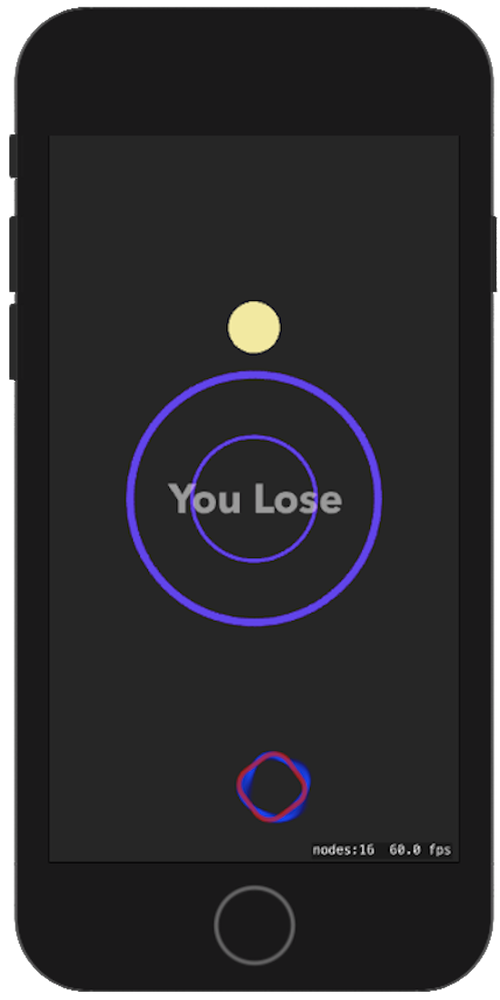
Skills
I had a generalist engineering scholarship, even if my main field is programming, I master electonic and mechatronics as well. I know and used different programming paradigms and development methods such as procedural programming, Object Oriented programming, meta modelisation, etc... I am also familiar with machine learning, data mining and data analysis (mainly using TensorFlow, Scikit-learn, Pandas with Python). Here is some of the programming Languages I master :
C
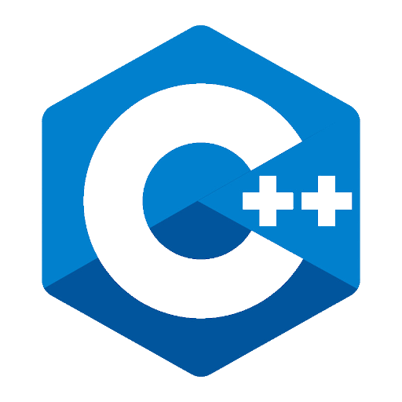
C++
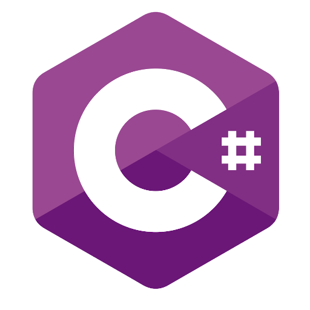
C#
Python
Java
HTML
CSS
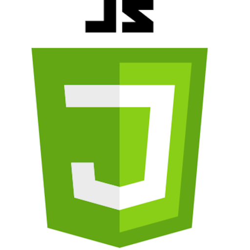
Javascript
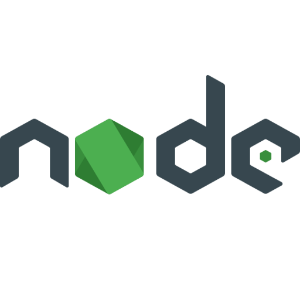
Node Js
Swift
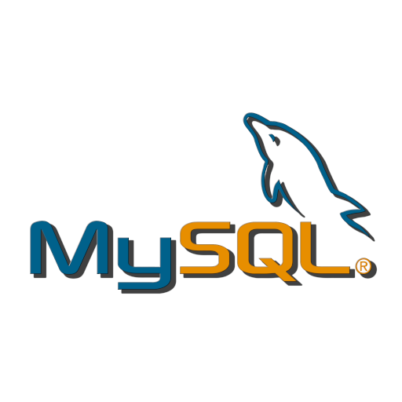
MySQL
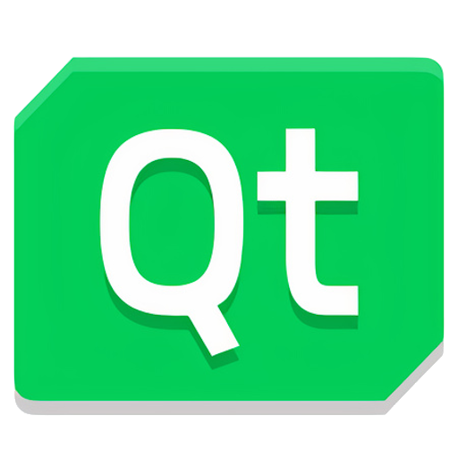
Qt
Interests and hobbies
I am passionate about Basket-Ball. If I had to choose only one hobby, it would be Basket-Ball. I have been playing Basket-Ball for 9 years.
I started in my high school junior year. I practiced in competition for 3 years in high school with the « ABC Saint-Jean-de-Braye » team, then I played Basket-Ball tournament with my school team for 5 years and I did a little bit of coaching.
Now I play both in competition with « CJR Basket Saint Renan » in competition and with my school in graduate schools tournament.

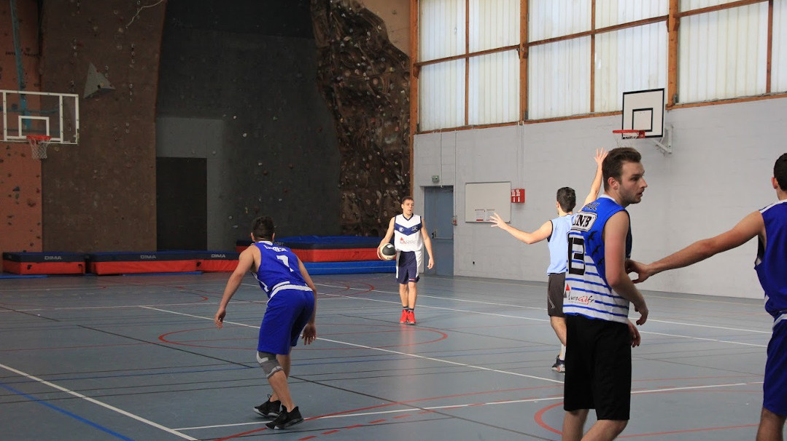
I also love video-games, programming, drawing, listen to music and many more…
I am curious about lots of things, I love to discover new things and create what I can imagine.
I am very found of bringing my ideas to life through video-games (I think my portfolio can testify), and time to time, through drawing.
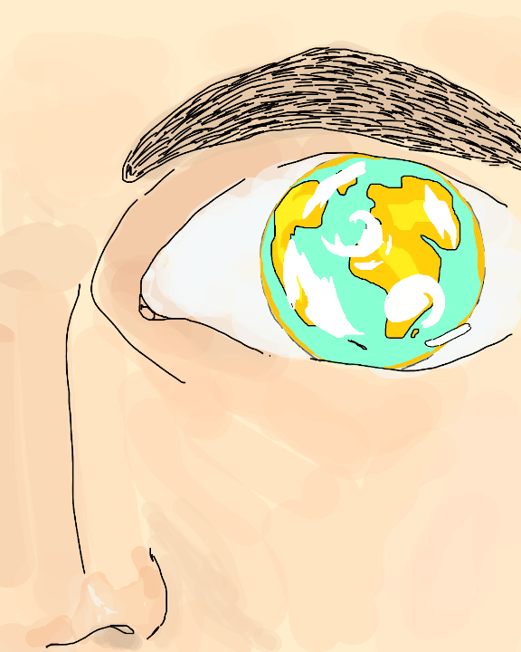
One of my drawings.
Oh... Did I say I love Basket-Ball yet?
Resume and references
I got recommended both from my last two internships.
The first reference is from Pascal Pineau for my work at DOSIsoft, Paris. The second one is from Dr. Christine Lisetti for my work at FIU, Miami.


Contact
email : luc.castelain@icloud.com
Copyright © 2021 Luc Castelain.